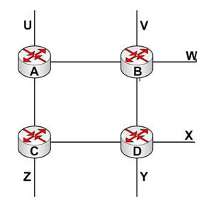

◉ Roteamento RIP
O RIP foi um dos primeiros protocolos de roteamento intra-AS da Internet e seu uso é bem
difundido até hoje. Sua origem e seu nome podem ser traçados até a arquitetura XNS
(Xerox Network Systems). A ampla disponibilidade do RIP se deve, em grande parte, à sua
inclusão, em 1982, na versão do UNIX do Berkely Sofware distribution (BSD), que suportava
TCP/IP. A versão 1 do RIP está definida na RFC 1058 e a versão 2, compatível com a versão
1, no RFC 1723 (HEDRICK, 1988).
A principal diferença entre o RIP versão 1 e versão 2, é que um usa o modelo classfull
e outro classless. Ou seja, a versão 1 não envia a máscara nas atualizações. Logo, tal
método não pode ser usado em sub-redes, pois sem as máscaras, os roteadores vão
classificar os endereços como classes de redes A, B e C. Já a versão 2 do RIP
usa classless, ou seja, envia a máscara nas suas atualizações, com isso, sendo possível
a utilização em sub-redes.
O RIP é um protocolo de vetor de distâncias. Dessa forma, a versão especificada na RFC
1058 usa contagem de saltos como métrica de custo, isto é, cada enlace tem custo 1. No
RIP, os custos são definidos desde um roteador de origem até uma sub-rede de destino. O
termo salto, que é o número de sub-redes percorridas ao longo do caminho mais curto
entre o roteador de origem e uma sub-rede de destino, é utilizado no RIP. Na Figura
mostra-se um S com seis sub-redes.
A Tabela, abaixo, indica o número de saltos desde o roteador de origem A até todas as
sub-redes (KUROSE ; ROSS, 2009).

O máximo custo de um caminho é 15 saltos, dessa forma, limitando para apenas redes com,
no máximo, 15 saltos. No RIP, as tabelas inteiras de roteamento são trocadas a cada 30
segundos, usando uma resposta RIP. A mensagem de resposta, enviada por um roteador ou
um hospedeiro, contém uma lista de até 25 sub-redes de destino dentro do AS, bem como
as distâncias entre o remetente a cada uma dessas sub-redes. Mensagens de resposta
também são conhecidas como anúncios RIP (KUROSE ; ROSS, 2009).
Como o RIP é um protocolo que faz uso da contagem de saltos como métrica para realizar o roteamento,
deve-se atentar para um valor chamado de distância administrativa (ADs), que é uma métrica utilizada
para classificar a confiabilidade das informações roteadas, recebidas por um router, que chegam de
outro router vizinho. A distância administrativa é representeada por um número inteiro compreendido
entre 0 a 255, 0, sendo a rota mais confiável a 255 significando que determinada rota é inalcançável.
A Tabela 3 mostra as distâncias administrativas que os roteadores usam para determinar qual rota
utilizar para chegar a uma rede remota (FILIPPETTI, 2008)
Em uma rede diretamente conectada, a mesma sempre utilizará a interface conectada nela. Se um administrador
configurar rotas estáticas, o router “acreditará” nelas e não nas dinâmicas. Os valores de ADs podem
ser alterados, pois os valores mostrados são default. Se uma rota tiver o valor 255, esta não
conseguirá atingir seu destino (FILIPPETTI, 2008).
Retornando ao assunto de mensagens RIP, como é mostrado na Figura, considere parte de um AS.
Nessa imagem, as linhas que conectam os roteadores, representam sub-redes. As linhas sem conexão
representam que a AS continua e essa AS possui muitos roteadores.
Como se tem conhecimento, cada roteador mantém uma tabela de roteamento RIP. Tal tabela inclui as
distâncias e a tabela de repasse. Na Tabela 4 visualiza-se a tabela de roteamento do roteador B.
Neste exemplo, a tabela mostra que, para enviar um datagrama do roteador D até a sub-rede de destino w,
o mesmo deve ser primeiro enviado ao roteador vizinho A. Com isso, a tabela mostra que a sub-rede
de destino w está a dois saltos de distâncias ao longo do caminho mais curto. de modo semelhante,
a tabela indica que a sub-rede z está a sete saltos de distância via o roteador B. Em princípio,
uma tabela de roteamento terá apenas uma linha para cada sub-rede no AS, embora a versão 2 do RIP
permita a agregação de registros de sub-redes, usando técnicas de adição de rotas semelhantes
(KUROSE ; ROSS, 2009).
Algumas questões devem ser enfatizadas com relação ao RIP, no momento de pensar em sua implementação.
O RIP envia anúncios a cada 30 segundos, se um roteador não “ouvir” nada de seu vizinho, ao menos uma
vez a cada 180 segundos, esse vizinho será considerado impossível de ser alcançado dali em diante,
isto é, o vizinho está inoperante ou o enlace teve algum problema. Quando é apresentando,
o RIP altera a tabela de roteamento local e, em seguida, propaga tal informação, transmitindo
anúncios aos seus vizinhos. Um roteador também pode solicitar informações com relação aos
custos das rotas. O RIP usa a porta 520 e o protocolo UDP para o transporte de seus anúncios
(KUROSE ; ROSS, 2009).
Para alguns autores, o RIP já não tem motivação alguma para sua implantação.
Ele funcionava bem em sistemas pequenos, no entanto, tudo mudava à medida que os SAs tornavam maiores.
O protocolo sofria do problema de contagem até o infinito e, em geral, de uma convergência lenta
(TANEMBAUM, 2003, p. 484).